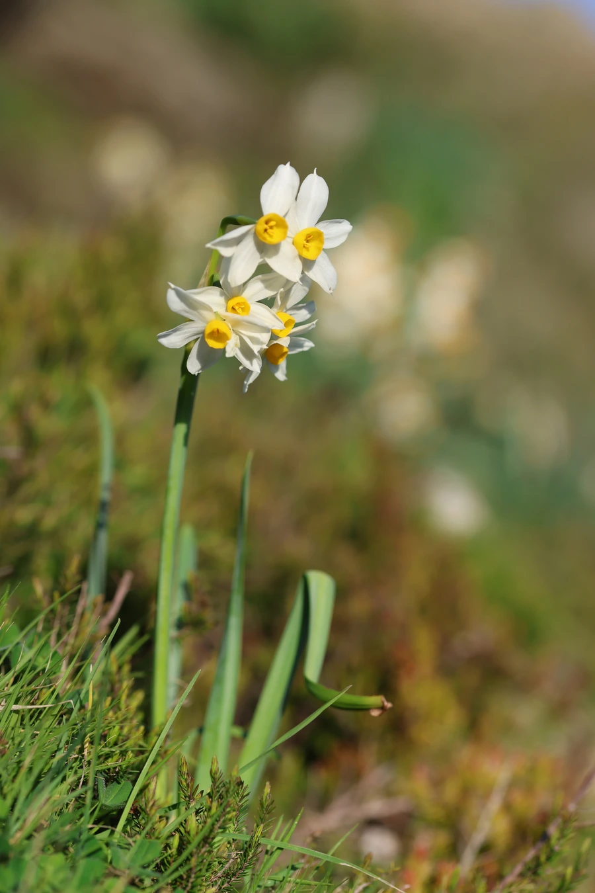

花卉与草本 · 植物界
水仙 Narcissus tazetta

石蒜科球根草本，冬末春初开花，白瓣黄心、清香淡雅，是春节案头清供和福建漳州的传统名花，也是常见的年宵花卉。
- 分类
- 门被子植物门纲木兰纲目天门冬目科石蒜科属水仙属
- 栖息环境
- 温暖湿润的溪畔、庭园及沙质土壤，喜阳光充足、冬季温和
- 地理分布
- 原产地中海沿岸，中国福建漳州、上海崇明、浙江舟山等地大量栽培
- 保护级别
- 暂无评估
物种志
水仙为石蒜科水仙属多年生球根草本，株高 20–40 厘米，鳞茎卵球形，外被褐色膜质皮。叶片扁平带状，长 20–40 厘米，粉绿色。花葶自叶丛抽出，伞形花序有花 4–8 朵，花被片白色、6 枚，副花冠浅杯状、黄色，香气清幽，花期 1–3 月，果期 4–5 月。
水仙原产地中海沿岸，中国栽培的多为多花水仙变种，以福建漳州、上海崇明所产最为著名。它喜温暖湿润、阳光充足的环境，秋季种球下地，冬季抽叶开花，夏季休眠，可水培或盆栽，水培时只需清水和卵石即可。水仙是中国春节的传统清供花卉，寓意吉祥如意；园艺者还会雕刻鳞茎，塑造出蟹爪、茶壶等造型。鳞茎含石蒜碱，全株有毒，不可食用。
形态与习性
- 株高20–40 厘米
- 花期1–3 月，单株花期约 2–3 周
- 果期4–5 月，蒴果
- 光照喜光，也耐半阴
- 水分生长期喜湿润，水培需定期换水
- 土壤疏松、排水良好的沙质壤土
- 繁殖以分球繁殖为主
- 主要用途春节清供、水培观赏、切花
趣味知识
- 水仙花被片洁白，中央杯状副花冠呈黄色，形成“金盏银台”的经典形象。
- 福建漳州水仙以雕刻造型闻名，一球可塑成蟹爪、茶壶等形态。
- 水仙鳞茎含石蒜碱等多种生物碱，误食会引起呕吐和腹泻。
- 水培水仙不需要土壤，靠鳞茎内储存的养分即可开花。